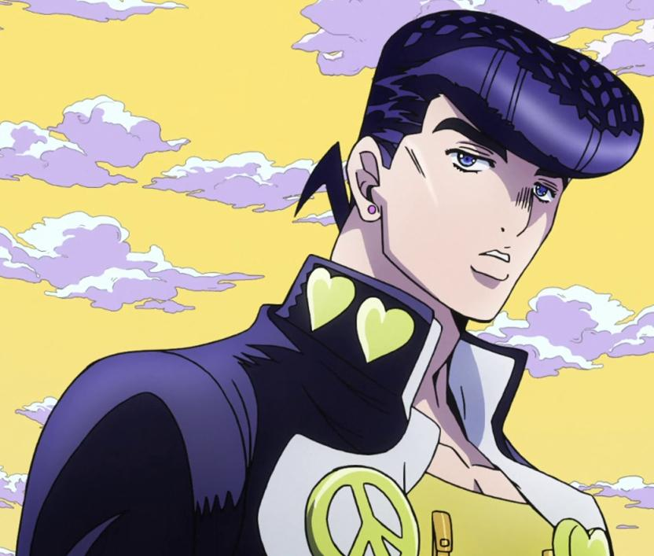

Josuke Higashikata

Josuke Higashikata is the main protagonist of JoJo's Bizarre Adventure:
Diamond Is Unbreakable, the fourth part of the JoJo's Bizarre Adventure
series. He is a kind-hearted and confident teenager who uses his Stand,
Crazy Diamond, to protect the people he cares about and defend his town.
- I admire Josuke because he is always willing to stand up for his friends and protect them when they are in danger.
- I like Josuke's confident and funny personality because he can make people laugh while still taking serious situations seriously.
- I admire Josuke because he uses his Stand, Crazy Diamond, to help and heal other people instead of only using his abilities for himself.